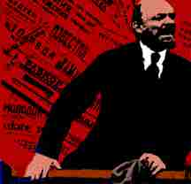
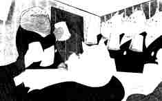
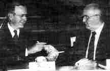
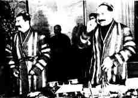

Revolution and SorrowI. Desire and Memory I am almost moved to tears the first time I read these lines. Finishing the excerpts from this fifth chapter of Trotsky's book in a communist reader, I reread then an I almost cry again. I feel history-- the seventy or so years -- as sinews, palpable muscular extensions. It is as if time and space have exchanged and I can feel a pull from "over there", only over there is back then. I have developed a sorrow for the loss of the revolutionary dead and have irrationally developed a need to somehow overcome the distance from their lives and to recoup the loss of the revolutionaries living force. Perhaps today it is more a loss of their hope for the future which seems missing. As we see the co;lapse of the Eastern Bloc, to the West it seems that communism is dead (or Communism is dead), I realize, however that communism has long been dead, but it seems only in its death, as a system, can re-birth become possible. This is horrifyingly mythic, I realize, for a communist to say, but we are speaking of a system of thought, a virtual death, not a real one. In some way it forces me to draw the comparison between the revolution and those who died for it, who would dialectically define the revolution itself, who in a way gave it value and meaning in choosing to risk death. In this moment I have begun to seek out a meaning for these deaths, both the systemic and the animate, and in doing so to question the nature of historical method, meaning, and death itself. Somewhere along this path I have begun to construct an image for myself of the revolutionary dead to somehow fill this void, at first consoling, and now threatening to this whole project.My sorrow began not in the image or the text, but in the aural with a song by the Pet Shop Boys, "My October Symphony" (Behavior, 1990). I realize it has only been a short while that I have felt this sorrow, this change in my sorrow-- that I have given into it, or fully become capable of it. The line "Will they cancel the parade?" is surprising the line that strikes me across the sternum, not the section about mourning our war torn dead. I think it is the sense of loss of hope which is more compelling than loss of life, with the hope gone, who gives a fuck about the living or the dead? Certainly, it's not that I'm particularly enamored with the "parade", the big mobile missile launchers and troops trundling weapons erect across Red Square, but the loss of the feeling of accomplishment, the great human experiment in the trash bin. Giving up. My sympathy is not so much for the dead as the living who have given up life. The dead don't give up, they die. I am at a loss to my sorrow, utterly desolute , but I do not cry, I weep tears that run singularly, they take a long time to build up, to find enough pressure to break from the ducts-- it is a long process, somehow indirect and about a certain indirection. At first this seems to be a sorrow for the dead, more and more I realize, it is a sense of loss that comes from my own sense of disempowerment, teetering on the edge of despair, while at the same time trying to save the possibility of revolutionary practice from the same precipice, for in fact there seems to be little I can do to change the fate of communism. My thoughts upon reading these lines are however, directed not so much at the aural world or at Trotsky's text itself, but at the spectral, what I cannot get out of my head is the filmic image of "the revolutionary dead". It is this image which most fully compensates for my lack of memory, I find it incredibly telling that it is an image and not a sound or a text which I seek to fill this lack. The corpses which are my immediate image of the revolutionary dead are the bodies of the Soviets which were executed by Stalin and later, sometime after World War II, uncovered again,, disintered from their graves in the cold forests of the Soviet Union.. I am only aware of this piece of film as a fragment collaged in to the end of Dusan Makavejev's Sweet Movie. Now certainly some of these dissidents were just bourgeois spies and such, so there is a sort of contradiction here, but again I at least associate these bodies with Trotsky, exiled and assassinated, and those he said were truly the revolutionaries of the revolution, not the moderates, capable of quelling, the repressing the tides of energy released with the Tzar's death. In comparison, the bodies of Eisenstien's Potemkin seem staged in a way that these bodies from the forest with frost clinging to their hair and the clinical camera angles of this archive footage do not. Now in this movie they exist as the revolutionary dead and they seem to be so "real", their image evokes emotion. If Trotsky is right, I think, then these might be the "real" revolutionaries. If these men had lived, if the "real" radicals had maintained power in the Soviet Union, what then? But this is not history, it is me slipping into simple utopian daydreams, the stuff of movies.
II. Appearance and HistoryI do realize that I have this inability to produce the corpus dilecti. I make it re-appear and re-appear, but the corpses original presence, its material occupation of space is lost, it is not for me. Here there seems to me to be a contradiction in the very term production, for if production means nothing more than to make appear, I have done that, and yet frustratingly enough, I have not made the body real in this production, I have returned none of its flesh to it. I have, I think, produced the image, the appearance of the corpse, but not the corpse itself, but on what grounds do I base such a distinction? These images construct a history of the revolutionary dead for me in as much as they seem to make them real, perhaps it is better to say they make them appear: for this is not memory, but a photographic surrogate for something I wish to have a memory of, but do not. It fills my lack of memory, but inadequately-- ultimately it only frames out the lack, structures it-- makes the lack "present".Yet this in fact is the key to overcoming the lack itself of transforming the need into a desire and realizing the revolutionary potential of a re-evaluation of death. There is the necessity of memory in the communist mind, for without memory one can construct neither a history of capitalism to be opposed, nor a theory of historical materialism. Historical materialism is immediately ideology when one negates history (I believe it is an ideology which looks something like Aristotelian Logical Positivism, if I'm not mistaken) . History is always is a matter of memory, memory and history are almost synonymous, were it not for the perversions of history and subjectivity itself, I have a difficult time separating the two, history is nothing but memory and likewise memory is nothing without the "remembered". My attempts to construct a personal memory of the revolutionary dead leave me with nothing but a memory of a mediated image, and only a direct, so to speak experience of the mediation. Likewise, history must somehow remain actual in the sense of efficacy and risk. History is not an object, it is not a corpse, rather it is the embodied phenomenon of regarding the past, of corpse watching. The past is, an object produced (by Klienian logic) from the production of the subject, or rather in production of the subject, the production/splitting phenomenon existing a priori (in as much as the term is applicable). The past, the alienated object of the labour of memory exists like no other object, on an ever changing cusp between "natural" alienation and alienated nature: 1 It is not an object as all, it is rather a phenomena in itself. It is a phenomenon, a change, now passed-- change done changing in a moment, but a movement fixed in having been completed. 2. It is not one phenomena, but a complete and interrelated nexus of phenomenon which while remaining coherent from certain fixed vantage points, exists as uniquely chaotic, disordered and incomplete from others. 3. Each subject of history cannot be reduced each holds not only its own history, but its own history of histories as well. 4. History continues to consume us, and as it does so, the presents relationship to the past and to the new "edge of history" (what has just been) changes the whole of history as a present meaning. 5. The moment of history now as we see it is spectral-- residing almost completely within the textural or image world. It is gone, absent, removed from us, and yet exists simultaneously as immediately present in as much as the past has created the present and is the grounds of any future. The past must remain material (in its marking, effecting our present material world), without materialism, the past becomes a text and not a corpse. It is in fact the corpse of the parent and at once the corpse of the mother and father. it is the body we lived in and are now removed from, but it is also the body we never lived in (it was the present as we lived in it) but which provided the code for our existence, a donor of some structural foundation. These ate inadequate terms to establish our relation to the past, and yet provide a meaningful metaphor for simultaneous psychological existence at once in and out of it, in immediate relation and at the same time permanently removed from it. The implications of the past as corpse implies a material link between "now" and "then" and at the same time we are alienated from the past itself, by both the current mode of production, and the nature of time itself. But this does not eliminate the appearance of change, for the past, while quite stagnant, changes, if only in relation to the ever- becoming present. The presents gives it the appearance of change, but this is not the changing of the past, but of our relation to it, that is the changing of history. There is no past, only the appearance of the past, there is only history, the past is like a corpse, vacant yet lingering in history.
III. Investments in the Vision of DeathI have been hiding, for the sake of the political power engendered by doing so, my own personal rubbings with death and my psychological investments therein, now I will reveal them. I do so not in order to take a transcendent position, or to more nor in order to transcend the social and the political with the rights of the the subject, but in order to free theorizing from any such repressive motives-- to get the threat I will produce such an account now so as to dispel and threat to the revolutionary and broader tack of my writing. i think it is safe to say that I experienced some sense of loss in not having seen the bodies of my father and two grandfathers after their respective deaths, but rather than show why I have such an investment in the relation between the specular and death, it may show how I contacted it, revealed such an investment in the revolutionary . My maternal grandfather died when I was about twelve. I stayed with my paternal grandparents while my parents want to the funeral across the state without me. I was assured that I would not want to be there., I would not want to see it. i remember the construction of of images of the funeral in my head, trying vainly to make it real, in order to vindicate me from the guilt at not attending (reinforced by my cousin, a year older than me who did attend the and let me know what he thought of my absence, but would not tell me what he saw). The images constructed were thus gruesome images which I believed to be sickening enough to warrant my parents actions. Disinterment, cannibalism, decay, attended by all the ceremony of Catholic High Mass. My father died when I was seventeen. My mother was unwilling to spend the money on a casket fort the funeral as my father wanted to be cremated and this was an unnecessary expense. She believed I also did not want to be confronted with his body again. She also explained that she felt the ritual of viewing the body was dis-respectful of the dead person perhaps because they could no longer hide themselves, move away, or gaze back.). The funeral director convinced my mother that there is a need to convey a sense of the bodies presence. A table (or was it an empty coffin? I can't remember) was set up in one corner of the room with flowers on it and wreaths on easels to the side. The flowers marked out not as the funeral director had suggested, the presence of the body, but rather the absence. A nest of lack and signification of lack. (But do I trust myself, I can see my father with the thick death makeup, is it an image constructed or repressed? No, constructed I think from the image of a friends brother who died in a car accident with n a year of my father, who's funeral was held in the same room. A situation in which, unlike my fathers, the body was on display.) When my paternal grandfather died two years later, on the eve of New Year's Eve, there was, I was guaranteed over the phone, nothing I could do, no funeral of Wake I could attend, no reason to turn back to Michigan after having just returned to Chicago from there two days before. My grandfather was a doctor and a firm materialist, no god was to be invoked in his passing. I actually shared a good deal of pride with my Grandmother in this final rejection of theism, but was again deprived of the parting glance which had alluded metwice before.,. Now, there is nothing revolutionary in these deaths, I realize that, I don't believe they can be vindicated by history, for the bourgeois lifes they ended. it is this un-seeness and this (perverse, no not turned away, turned toward!) desire to see death (even though I have seen it and I realize on some level there is nothing there to see, except the absences), yet it still haunts me. I don't want to indulge in the narration of personal memory at the expense of my real task, but what I have revealed must be said, that it not become the repressed and unspoken motivation for what I demand to be conscious action, rather I am concerned with showing this desire has a very powerful potential to make conscious revolution based on the understanding, a respecting of history as a possibility for realization.
IV. Representation and Death I find this almost as difficult to deal with as the reality of mortality itself, the inability to get beyond the images, to have an immediate experience of these corpses. My inability for death to become more than re-production, an image, a text, or a song. I am moved by these reproductions, and the material of the reproductions touch me, but as Freud has already commented, I cannot formulate an adequate model for death. Aye that is the rub. Still, this emotion I feel, a hollow stomached ache for the images of these bodies (regardless) for they re-present to me the revolutionary dead to me-- bodies which are lost to me. As bodies they are dead and they are incorporeal for me, simple formal representations- mediated, and in this way they are dead as well. but then I can almost blame the camera (the gaze) for having killed them, but I realize that the only reason they "appear dead" is the mechanical regime of reproduction, despite which they most certainly would be dead, but not appear, even if there is a certain taint of death in the fixed mediation of the mirror. They are lost the way Roland Barthes speaks of his mother being lost to him in Camera Lucida, the mother of that photo taken before his birth, a mother which he never knew and yet an image which captures his mother completely which as an image rivals her as she was in flesh, an image which recalls her, which represents her to him. "Death is not desired, but what is desired is dead, already dead: images. Everything labors in death, everything whishes for death. In truth, capitalism has nothing to co-opt; or rather, its powers of co-option coexist more often than not with what is to be co-opted, and even anticipate it." {Deleuze} This serves to create the "appearance" of revolution not the revolution of appearance. It has already been pointed out to the point of banlity, the relation between the photographic, death and memory; the photographic seen as the memory of the dead and the death of memory. Death is only overcome in images by succumbing to it. But this is also then the death of history, or perhaps its origin: its embodiment in the human mind. In fact I believe it is rather both-- certainly from the position of the spectacular image- in the culture of capitalism one sees photographic reproduction as the death of memory and history through a false unification of images and subjectivity. I have to agree with Lyotard, "That which the historian recounts and explains had to be real; otherwise what he is doing is not history.... The opposing party against whom the historian argues with all his force is not easy to beat; it is death, it is the forgetting which is the death of death itself". Now Baudrillard says the real is that which has already been represented, the collision of these two quotations produces what seems quite a paradox...But I do not so much take Baudrillard's as Deleuze's position which resolves the apparent paradox by determining the field on which representation exists, how it is produced: Desire. In this we find a new organization of the three epistemes of humanism: Death, Desire, and the Law. Desire produces, it produces the real, with or without representation, for desire produces re-presentation itself. (but we can concur with Baudrillard for the sake of argument). "The order of desire is the order of production, all production is at once desiring production and social production, we therefore reproach psychoanalysis ( and implicitly Baudrillard and his investment in the Oedipal, although I believe his statement was made later) for having stifled this order of production, for having shunted it into representation. Further, it changes the desire to overcome death through history into a new relation-- the overcoming of repression (capital) with history and death, a historical practice which is like death, is simulacral,"Desire, the desert-desire, the revolutionary investment of desire. And that is indeed what undermines capitalism: where will the revolution come from, and in what form within the exploited masses? It is like death- it will be a decoded flow, a deterritorialized flow that runs too far and cuts too sharply, thereby escaping from the axiomatic of capitalism."
V. The Spectacular Image of DeathOne thing I have not adequately resolved is the distinction between the images of death so dominant in current spectacular capitalism and the almost invisible bodies of the revolutionary dead. The deaths of the spectacle, are fantastic, fictionalized and ultimately provide us with a means by which to de-realize death, to distance ourselves from it. I think of how surrounded I am by images of Death. These images proliferate to the point that one cannot distinguish between the real and the false death. They become interchangeable and yet function as different. It is at once clear and obscured. The narrative/fictional death is entered into trough an association immediately with the represented victim, the journalistic/real death is entered into through an uncomfortable association with our own mortality. Both are texts, spectacles of death, but in different ways they avoid what can be called a primary area of taboo in capitalist psychology relation between death and production. Death occurs outside the law, not in it, even when it is the police or a state execution, the question is necessarily deferred. My lover is horrified by the Milwaukee slayings in which a man seduced and or bribed young men to his apartment to model erotically, only top kill them an perform necrophilial and cannibalistic act on their corpses. She horrified, asks me what this makes me feel. I believe I am supposed to be horrified, yet I cannot make myself, I hold my horror at arms length, I wincingly laugh (which testifies to my uneasiness, yes) but I cannot imagine myself the victim), I laugh to myself, not out loud, I have retained it. My genera; reaction this laughter and the words unspoken as well, "well that `s capitalism, it's going on all around us, just more discretely, like Baudrillard's assertion on Watergate, it is the appearance which dissimulates that mass murder is the law itself-- it dissimulates the business as usual." Another place we find a consideration of death for the radical is Godard's Weekend Godard is aware of the duplicity of constructing an image of death-- he clearly shows the opposition in his treatment of the images of death in this film. On the one hand the dead motorists seem terribly (in both senses) staged-- he plays at the mass death represented in the media spectacle and at the valuelessness of human life in capital. The death here seems without consequence. The "dead' actors can be seen breathing below a veil of blood. On the other hand, the death of the goose and pig, killed by the cannibal-terrorist-hippies, later in the movie, seem to have more of a valence. This is a record of a real death, staged for the camera, caught in narrative and representation, but these animals are really killed, offered up for the camera, they will never live again.
VI The Death of Vision and the Vision of DeathNow this brings us to the very inner workings of subjectivity itself-- a point which Deleuze and Guattari have shown to be central to the revolutionary. Death is most certainly the dissolution of subjectivity, and if we read Lacan straight, vision in the mirror is the moment of subjective atomization, the moment the subject fully conceives of its boundaries (although there is a proto subject which is rather more boundless in breast relations) One finds Lacan in need of historicizing, or re-historicizing. Uncannily one finds the moment of the historical mirror phase at more or less the same time Foucault identifies the emergence of the bourgeois subject of humanism. Foucault quote?? The mirror was among the additions to eschatological rituals and subject formation which capital, industrialization and mass production presented us. It has long been a custom to close the eyes of the dead, but of more recent origin is eschatology is the 16th century is the tradition of covering the mirrors in the house. The irrational superstitious reason for this is to keep the spirits from coming in from the mirror world and devouring the confused soul of the dead, or of keeping this confused soul from slipping into a mirror world of purgatory or hell. However I would suggest , informed by Lacan. something else. If the mirror is the (object/relation/image) from which the subject is formed, one sees there is a certain way in which subjectivity is an economy of the consumed image. The production of subjectivity, the mirror stage is a certain mutual consumption, the mirror consumes one's image as one consumes the image in the mirror. When dead however, one's vision is no longer active, one's image/spirit can be consumed by the mirror, the image of the corpse and yet the corpse can no longer consume the image in the mirror and maintain the atomization of the living individual. Perhaps, by this logic the rituals of corpse watching, in various forms, are not only extensions of the real threat of corpse robbers, common in Europe until the middle of the last century, but also a form of ritual consumption of the corpse, a corpse which can no longer turn away or stare back. It becomes then a spectral Eucharist, completing the dissolution of the body into spirit, even the consumption of the individual is displaced from the body to the bread and wine, to the image. The image had become in this transformation, notably within the early object relations with a product of mass-production, hitherto only available to the aristocracy, more or less associated with the soul. To consume one visually is to consume one spiritually, a notable rupture from Merleau-Ponty's conception of space in "Eye and Mind", but one which accounts for the reification of vision in the bourgeois subject and notably is that which through a historical turn makes Merleau-Ponty's conception of vision as related to practice, and in particular the practice of the appropriation of space, so radical. This is one of the front lines in the battle to overcome the bourgeois sensibilities from an aesthetic (practical/phenomenal) point of view. The image in spectacular culture is a peculiar matter of transubstantiation-- to consume some ones image is to consume there inner self. If the eyes are the mirrors of the soul, then the mirror is the eye of the soul. To consume an image is to devour without touching, without {Cannetti's} risk of bodily contact, of being devoured oneself. But then this is too simple-- we have learned for ourselves the meaning of "that" glance, gaze, or stare. We are devouring each other, yet hesitantly, keeping our distance. We have learned to forget that the stare was only the threat of danger, not danger itself (witness the P.C. codes of sexual harassment), a threat which may, or may not be acted on. The gaze has moved from an ambivalent sign for devouring to an immediate sign, a motivated sign for visual devouring itself. In this movement, the image has been detached from the "occupying body" which produced it. This division has perfected the Platonic mind/body division and the Christian structures of representational devouring in the Eucharist by combining them. We now need only cast our gaze upon the bread and wine-- our gaze must, our tongues must not touch them. The consumptive mode in capitalism has always been cannibalistic, now in the consumptive mode of the spectacle we find the cannibalistic act re-produced, mediated and repressed through its transference to the realm of mere signs appropriated visually. What is more, we can say finally what the soul is, not he bread and wine, but the system of represent action inferred by it-- the soul is the image, detached from re-presentation itself. This again would be fully concurrent with Lacan-- for if the essence of subjectivity is the soul for the Christian and the mirror image for Lacan, in the spectacle they show themselves as one in the same. One could say this is a real way in which the Televangelist are more Christian than Christ, they have a better image. The spectacle with its detached images is truly the realization of a new Jerusalem, a just and true Republic. Among the eschatological rituals which were developed by the emerging bourgeoisie which bear further light on this topic is the ritual of placing coins on the eyes of the dead. This served the practical purpose of weighing down the eyes, holding them shut until rigor-mortis set in. It is a ritual however which places a number of issues on the table. Firstly, why shut the eyes at all, and secondly, why coins? As to the first question, I would suggest, it is a matter of the same closure of relations that is suggested by covering the mirrors. One does not want to either be looked upon by the dead, to be visually consumed by death or on the other hand, to acknowledge the eventual inability of of one's own dead self. This is problematic, for it would seem that the closure of the eyes, like the relation between vision and spirit existed before the onset of industrial capital. As to the second question of why the coins should be used as opposed to some other object, to this I have more certain answer-- they are, or become, the unseeing surrogate for the human labour of vision. Coins replace, and replaced throughout life cleanly and comfortably, all human activity-- but perhaps more than any others, these two activities, the production of subjectivity and vision, which following a certain logic are quite the same. It is a means by which to deny the nullifying power of death and allow the subject to go on living in death as they did in life through their money., This gives new meaning to Marx's words in the Paris Manuscripts, "And everything which you are unable to do, your money can do for you... it can appropriate all these things for you, can purchase everything; it is the true opulence. But although is can do all this, it only desires to create itself..."
VII. The Death of Communism With communisms being what they are these days who can complain at their failure? The American Left ha been split into this camps those who would naively attempt to defend the indefensible and those who simply despair, continue to idealize rather hopeless about the human inability to achieve the utopian. To conscieve of the possibility of socialist is now impossible, how would one go about acting as a radical? Maybe most pressing in my mind is what to do as to maintain the work toward communism in the U.S? We are particularly stalemated at home. One no longer has the model of a working revolution, Nicaragua is gone, the Soviets are gone, the Chinese are only red in the sense that they have blood on their hands, Cuba is Cuba, one is left with a bunch of capitalist, classist systems, Germany has been reunified, or as the newsmen put it "East Germany is no more" other satellite countries from day to day change power and ideology, and are more concerned with national pride than international economics. But what is to me more pressing the general collapse and inability of anyone to say much to contextuallize these events from a revolutionary position.. All things considered, I think it is only by dealing with these events that we get to the point. The revolutionary left is forced to deal with its own end of monolithic communism as an affirmation, not the death of revolutionary desire, but of revolutionary need. This death has only been camped in the terms of the right, but the pronouncement of the death of Communism actually attests to the continued threat to capitalism that the revolutionary can actively represent.. That the left is stunned by it only shows how easily one is duped into dispair and reformism. The spectre of Communism haunting Europe is dead, it is twice dead, if anyone should know the meaning of the double death, the negation of the negation, it should be the leftt. Now that the left is believed to be dead we can operate quitely in the hands of the socious unnoticed and unbothered silently engineering he possibility of a revolution based on more economic need and well internalized Kantian moral imperatives. I'm not trying to like a Trotsky be position- the law is still invoked here the good law of Trotsky, treason to Lenin as opposed to the Stalinist despotic Law. Whatever I might disagree with Trotsky on that revolution is at least some Stalin in not before her really failed "we we're never saved". Like Benjamin's Angelicus Novus, for the revolutionary, it is like a pile of debris, there is no going back to fix the things , the lives which have been broken. Despite the broken lines revolution is not a matter of individual success or failure , but theatre the survival or extinction of the species. What can be said moreover in Trotsky's defense is that the dissolution of the Eastern Communism has everything to do with the continuation of world economic capitalism and the impossibility of communism existing and developing as an isolated and oppositional system. Communism really is pointless when so much money must go into the development of Nuclear weapons. When communism is reduced to the struggle for mere survival in an adversarial system, with already historically tipped scales it is not able to develop- it becomes like a tree growing like a tree next to a barb wire fence disfigured until the wire becomes a part of the tree itself. The dissolution of he Eastern Bloc as, we resign, brought the end of the tensions, or some tensions surrounding Nuclear arms. The START treaties underway promise a reprise from the fear of the last thirty years.this is an issue of life and death. But it is a false model, as Vaneigem says, there is a world of difference between the struggle against death and the struggle for life. In a workers' newspaper, I find a picture of Gorbachev's and Bush exchanging pens made from destroyed missiles with which they have signed the start treaties.. This is a truly horrifying image. I do not find the homo-erotic horrifying- not at all, it is not the "homo-sexual" implications of two world leaders exchanging pens which I find disturbs me. This exchange even their being made from missiles. It represents to me the change from the phallic oppression which the world has come to fear shifting from a level of destruction and challenge to agreement and law. they will work together to use the power which was once the missiles to pens, agreements. Agreements which are implicitly possible only in the abscense of communism and with the suppression of revolutionary practice. Power moves from the level of potential force to mere signification, and the new world order seems quite complete and revolution more necessary than ever.
VIII. Value and Death Baudrillard says, "Death should never be interpreted as an actual occurrence in a subject or a body, but rather as a form, possibly a form of social relation, where the determination of the subject and value disappears." So by taking the path of valuing death one is reinforcing the systems of exchange and value-- representation of the system itself. Baudrillard also says "death is always simultaneously that which awaits us at the systems term and the extermination that awaits the system itself." Baudrillard warns us to an extent of overcoding death, or says rather that which cannot be coded, that which escapes the code. Now certainly there is a grain of truth in this, and in fact Baudrillard's use of indirection is quite wonderful here, but I am rather more concerned with the moment of the dissolution of the code, where is for a moment ceases to be fixed, but still practically operates. For death is quite coded, death is fundamentally rooted in the code, for it is perhaps not an overstatement to say that all coding exists as an opposition and a challenge to death. Baudrillard wishes us to rest in peace, yet for the living death is constantly coded, i.e. made available for systems of symbolic exchange. Respecting the historical fact that in the individual memory dies and that the individual, so also goes a part of history, with mass death, so goes the collective memory of human life, utterly lost and irrecoverable except inadequately in abstraction. For history in its un- abstracted form is memory, history is always the abstraction of memory, the death of memory, or it is the collective archive of human experience, an archive which is lost and destroyed by pillages of time itself. For the radical death is the death of memory, which is the death of history itself. In Eric Michaud's essay, "The Real as Primal Scene: a note on Devouring", (Utopia-Post-Utopia, MIT, 1989) he contrasts Goya's painting "Saturn Devouring his Children", with the Moloch machine in Lang's Metropolis. He writes, "For the substance of surplus value is "human life force"; surplus value is human time. Capital's relentless devouring of human time is thus what enables it to grow-- to become in Marx's words, "value big with value, a living monster that is fruitful and multiplies." the monster speedily consumes faster and faster, bigger and bigger portions, surviving and reproducing by incorporating man's "living labor", or human time. The monster is like time which which gives all things and takes them back again-- but it always takes more than it gives. It is like Saturn devouring his children, but they are not his children." If we return to Makavejev's film we see that it presents us with a sort of parable about the presence and cruel necessity of death to revolution and I think this death is attended by a certain sorrow, which is attendant only to the deaths of revolutionaries, to those who die in order to make their lives better, for here there is an ironic failure and it is the living, those who do not die who "profit" from these deaths. The film cuts back and forth between the capitalist world and the voyage of a ship name "Survival", bearing at the helm, not a mermaid, but a huge paper mache head of Karl Marx. The ship is piloted by a woman, "captain Anna Planteta" very early in the film they take on board a young man wearing a sailors hat with Potempkin stitched across it.. They engage in child like rounds of sex, bathing and eating, until Anna Planeta stabs the sailor to death as they lay, together, post coital, in a bed filled with white sugar. He laughs as he's being killed, he does not seem to resent her. Later a group of pubescent boys are seduced by the older woman into the candy room of the ship, we find later that these children are killed as well in the quest for pleasure and liberation,.after their death, Marx's face is graced by a plastic baggy- tear drop with a gold fish swimming in it. At the end of the film, Anna Planeta is led away by the (capitalist) police for the murder of the children. Capital blames the revolution for the death of revolutionaries, as if Capital had itself not made these deaths necessary, as if Capital had not made death inevitable for all people, whether measured out in small doses or in one premature bullet to the head. We should see this as nothing more than Capital coding the deaths of revolutionaries for simple exchange, chaining down the simulacrum of revolutionary risk. This brings us back to the question of history and memory. If communism on some level is the overcoming of the produced division of subject and object, the negation of the negation, then is is also the revolution of the indivision of history and memory, this is what is meant by the transcendece of history, the transcedence of memory as well. Let us not mistake our point. it is not a matter of producing an objective truth of history of the subject overcoming the subsuming memory. It is not a matter of the abstract value of death to the spirit of the dead. It is a matter of life and value for the living. "I shall sow you the consummating death, which shall be a spur and a promise to the living." In re-signing ones self to nothingness, in finally dissolving subjectivity one exchanges some value of defined (valued) life for a value outside of it, but human life is invaluable and by entering the invaluable into the system of exchange without reifying it, the whole logic of exchange is disrupted. " He who has a goal and an heir wants death at the time most favorable to his goal and his heir." the revolutionary death pushes everything back to use value. But not Baudrillard's use value as "value", use value as practice, the use- practice of desiring production. Baudrillard posits death as the only escape from representation, form the coding of Capital, but what must be made clear is that practice, and even dying as a practice escapes need and the code, rupturing it. What Nietzsche is really speaking of is value of valuing death not a necessarily as a negation of life, but as a final affirmation of it, willing death, or risking death, for a reason and in doing so recouping the position of producer. This is also to reestablish life within practice as invaluable, any value is produced from life, from phenomenon, from desire, not for it. Let us not make the mistake of trying to establish any value of death for the dead, or of fixing an eternal value to death in itself. Rather, I'm seeking a position which simultaneously exists as a practical assistance in extermination of the system and avoids simply representation good in so doing . If we say the revolutionary death is the good death, without historicizing or taking responsibility for our own historical production of "death", we write nothing less than a communist Phaedo History as re-membering (the material) begun from, but never complete in respecting the dead. The difference between memory and history is the same as that between the subject and the object, all communist activity is an attempt to overcome the repression of their co-extensive nature. Revolutions consume men and human energy, but not like the Moloch of Capital, and not necessarily like time either, for it always at least is attempting to give back more than it has taken. It even attempts to give back more when what it has taken is life itself, through this remembrance, of the the corpse it produces a meaning for death, values it. Through liberated production it gives death a Promethian justification which escapes the position of model or copy, which escapes the reification of reverence. The value of the life which has been sacrificed in liberation, for the first time takes on this true value which has been and will be denied it under this mode of production: invaluable. And yet to one death has attained this value today, the worth of the life itself. It remains for those living to give these lives of the revolutionary dead the value which hangs in the purgatory of having been sacrificed, but not having made communism actual.
|